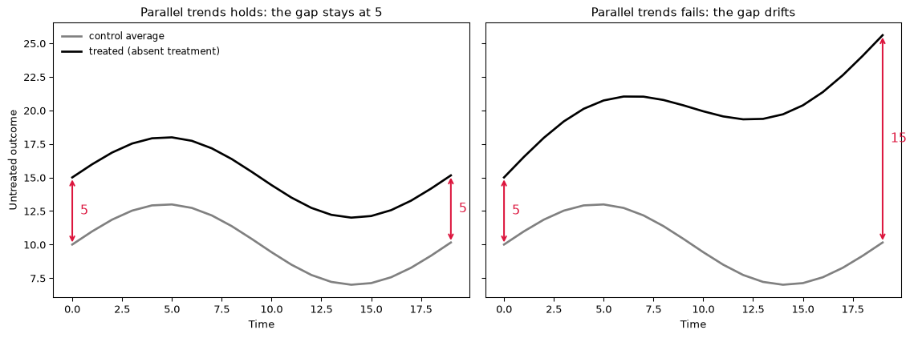
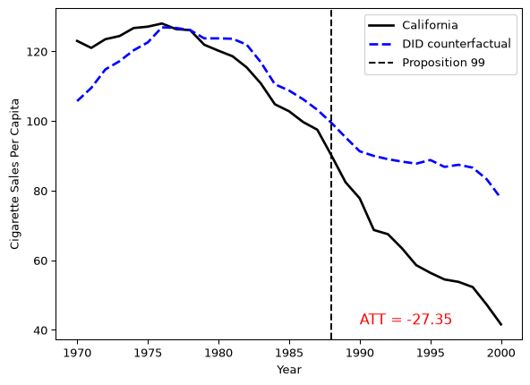

Difference-in-Differences Is a Synthetic Control With Uniform Weights
Econometric Theory
Causal Inference
This is a follow-up to my last excerpt, and (like that one) a preview of my forthcoming book on synthetic control methods.
“I think we may be In a different book, on a different page You said you are different but you’re the same” — Jhené Aiko, “stranger”
After the last post, where I showed that the arithmetic mean is really the solution to an optimization problem, somebody asked me a good question: why do people keep saying difference-in-differences (DID) is just synthetic control (SCM) with uniform weights? It is a fair thing to be confused about. The two are usually taught in different classes, with different notation, and DID in particular is almost never presented as an optimization problem at all — it is presented as a table with four cells and a subtraction, justified by parallel trends.
So let me start where everyone already is, with parallel trends. Then I will translate that familiar story into the same optimization problem we solved for the mean last time — only now with the weights held fixed — and show that, told this way, the link to synthetic control is a line of algebra rather than a slogan. At the end I will run the whole thing on Proposition 99 in Python, so you can watch the weights and the intercept do their jobs.
Start with parallel trends
Almost everyone who has met DID has met parallel trends. The setup is two groups, one treated and one not, observed before and after some intervention. DID takes the change in the treated group’s outcome and subtracts the change in the control group’s outcome. If, absent treatment, the two groups’ average outcomes would have moved in parallel, then the control group’s change stands in for the change the treated group would have had anyway, and the leftover — the difference of the two differences — is the treatment effect.
What is parallel trends really saying, though? Set the formula aside for a second. Suppose that on the very first day we look, our treated unit sits about 5 units above the control average. Not because of treatment — nothing has happened yet — but simply because that is where it starts: maybe it is a richer state, a bigger market, a heavier-smoking population. Parallel trends is the claim that this gap of 5 is sticky. On the next day, absent treatment, the treated unit is again about 5 above the controls, in expectation. Ten periods later, still about 5. The two lines may climb, fall, and zig-zag with the business cycle however they like — but the distance between them stays parked at 5, period after period, for as long as no treatment intervenes.
Sit with what that does and does not allow. It does not ask the treated and control groups to be at the same level — they are 5 apart the entire time, and that is fine. It asks only that the 5 never moves. So the treatment, when it finally arrives, is whatever makes the gap depart from 5. If the gap opens up to 32 after the policy, the treatment did the extra 27; the 5 was always going to be there. That one sticky number is the whole ballgame — and, as we are about to see, it is exactly the number the optimization solves for.
Figure 1 draws both worlds. On the left, the two lines wander all over — up, down, with the cycle — but the distance between them never leaves 5. That is parallel trends. On the right, the two start 5 apart and then drift; the gap grows to 15 for reasons that have nothing to do with any treatment. Both panels are the untreated world, before anyone has been treated. DID is only trustworthy in the world on the left.
Write it for a single treated unit and a donor pool \(\mathcal{N}_0\) of \(N_0\) never-treated units. Let \(y_{1t}\) be the treated unit and \(\bar{y}_{0t}\) the control-group average at time \(t\). Parallel trends says the expected gap between them is one and the same constant over time, treatment aside:
\[ \mathbb{E}\!\left[\, y_{1t}(0) - \bar{y}_{0t}(0) \,\right] = \beta, \qquad \forall \, t, \]
the same \(\beta\) before and after the intervention. This is the assumption that the average untreated outcome evolves in parallel for the two groups; everything DID reports is downstream of it.
Here is the thing I want to flag before we go further, because it is the crux of the question I was asked. In the way DID is almost always taught and applied, this is a large-\(N\) statement. You have many controls, and \(\bar{y}_{0t}\) is not really “38 states averaged with weight \(1/38\)” in anyone’s mind — it is a sample estimate of a population expectation, \(\mathbb{E}[y_t(0) \mid D = 0]\), the untreated mean in the control population. As the control group grows, the sample average converges to that expectation, and nobody stops to notice that an expectation is itself a weighting. In the Baker, Callaway, Cunningham, Goodman-Bacon and Sant’Anna (2026) practitioner’s guide the point is explicit from the first equations: the DID estimand is written with a weighted expectation \(\mathbb{E}_\omega[\cdot]\), and the weights, they note, enter “as part of the definition of the causal parameter” — before you have estimated anything. Large-\(N\) asymptotics just let you fold them into the word “expectation” and stop looking. We do not usually need to treat the weights as objects. That does not mean they are not there.
The same story in optimization language
Now let me translate all of that into the language of the last post, where every summary statistic turned out to be an argmin. The bridge is one identity we proved there: a (weighted) mean is the constant that minimizes (weighted) squared error. In the population,
\[ \mathbb{E}_\omega[X] = \operatorname*{argmin}_{c \in \mathbb{R}} \; \mathbb{E}_\omega\!\big[(X - c)^2\big] , \]
and in a sample,
\[ \sum_i \omega_i \, x_i = \operatorname*{argmin}_{c \in \mathbb{R}} \; \sum_i \omega_i \, (x_i - c)^2 . \]
So the weighted expectation the practitioner’s guide puts at the center of DID is an argmin, and the \(\omega\) riding on the expectation is the same \(\omega\) that weights the squared errors. Translating the notation, the control-group counterfactual is the expectation-side name for a one-parameter least-squares fit:
\[ \underbrace{\mathbb{E}_\omega[\,y_t(0) \mid D = 0\,]}_{\text{expectation notation}} \;=\; \underbrace{\operatorname*{argmin}_{c \in \mathbb{R}} \sum_{j \in \mathcal{N}_0} \omega_j \, (y_{jt} - c)^2}_{\text{optimization notation}} \;\overset{\omega \,=\, 1/N_0}{=}\; \bar{y}_{0t} . \]
Read left to right it is a population expectation; read right to left it is a weighted mean, which is a weighted argmin, which — at uniform weights — is the plain control average \(\bar{y}_{0t}\). The weights that large-\(N\) hid inside the word “expectation” are now out in the open as the coefficients \(\omega_j\). What is left is to put the treated unit and a level back in.
Where synthetic control comes in
Both methods minimize one and the same object: the least-squares fit of the treated unit’s pre-treatment path to the donors, with an intercept for the level, over weights on the simplex.
\[ \min_{\mathbf{w}, \, \beta} \; \big\| \mathbf{y}_1 - \mathbf{Y}_0 \mathbf{w} - \beta \mathbf{1} \big\|_2^2 \qquad \text{subject to} \qquad w_j \ge 0, \quad \textstyle\sum_{j \in \mathcal{N}_0} w_j = 1 . \]
Here \(\mathbf{y}_1 \in \mathbb{R}^{T_0}\) is the treated unit over the \(T_0\) pre-treatment periods, \(\mathbf{Y}_0 \in \mathbb{R}^{T_0 \times N_0}\) the donor matrix, \(\mathbf{w}\) the donor weights, and \(\beta\) an intercept — a level shift, the “5” from the top of the post. This is ordinary least squares with an intercept, over the probability simplex — the same non-negative, sum-to-one constraint the arithmetic mean’s own weights \(1/n\) satisfy. Deriving DID from it takes two steps: handle the intercept, then set the weights.
The intercept is a demeaning operator. The intercept never has to be searched over. For any fixed \(\mathbf{w}\), the best \(\beta\) is the one-parameter fit of a single constant to the residual series \(\mathbf{y}_1 - \mathbf{Y}_0 \mathbf{w}\), and by the identity above that constant is the residual’s pre-period average, \(\beta^\ast(\mathbf{w}) = \tfrac{1}{T_0} \sum_{t \in \mathcal{T}_1} \big( y_{1t} - (\mathbf{Y}_0 \mathbf{w})_t \big)\). Substitute it back and \(\beta\) disappears into a centering of both sides. Let the demeaning operator be
\[ \mathbf{M} \defeq \mathbf{I}_{T_0} - \tfrac{1}{T_0}\, \mathbf{1}\mathbf{1}^\top , \]
the \(T_0 \times T_0\) matrix that subtracts a vector’s pre-period time-average from each of its entries. Profiling the intercept out of the objective leaves
\[ \min_{\beta} \big\| \mathbf{y}_1 - \mathbf{Y}_0 \mathbf{w} - \beta \mathbf{1} \big\|_2^2 = \big\| \mathbf{M}\mathbf{y}_1 - \mathbf{M}\mathbf{Y}_0 \mathbf{w} \big\|_2^2 . \]
Adding an intercept and demeaning the data are the same operation: \(\beta\) absorbs the common level and \(\mathbf{M}\) removes it. What remains is a fit of the treated unit to the donors, both in deviations from their pre-period means, over \(\mathbf{w}\) on the simplex. Synthetic control solves exactly this — it searches the simplex for the weights that fit best.
Set the weights to \(1/N_0\), and you have DID. Difference-in-differences does not search. It plants \(\mathbf{w}\) at the centroid of the simplex, \(w_j = 1/N_0\) for every donor, so \(\mathbf{Y}_0 \mathbf{w}\) collapses to the plain control average \(\bar{\mathbf{y}}_0\) and only the intercept is left. Write the per-period gap as
\[ g_t \defeq y_{1t} - \bar{y}_{0t}. \]
Its pre-treatment average is DID’s intercept — the same one-parameter least-squares fit as before, with the “data points” now the gaps \(g_t\):
\[ \beta^\ast = \operatorname*{argmin}_{\beta \in \mathbb{R}} \sum_{t \in \mathcal{T}_1} (g_t - \beta)^2. \]
The minimizer is the mean derivation all over again. With \(u_t(\beta) = g_t - \beta\), the chain rule gives each term’s derivative as \(2 u_t(\beta) \cdot (-1) = -2(g_t - \beta)\); summing and setting to zero,
\[ -2 \sum_{t \in \mathcal{T}_1} (g_t - \beta) = 0 \;\;\Longrightarrow\;\; \sum_{t \in \mathcal{T}_1} g_t - T_0 \beta = 0 \;\;\Longrightarrow\;\; \beta^\ast = \frac{1}{T_0} \sum_{t \in \mathcal{T}_1} g_t, \]
and the second derivative \(2 T_0 > 0\) confirms it is a minimum. So \(\beta^\ast\) is just the average pre-treatment gap — the sticky “5” from the top of the post, now estimated from the data — and the counterfactual is the control mean shifted by this one number, \(\hat{y}_{1t}(0) = \bar{y}_{0t} + \beta^\ast\).
That least-squares fit is a model of the gap: it says the gap is one constant plus noise. And this is where parallel trends drops into the same lens. In expectation notation it reads \(\mathbb{E}[g_t] = \beta\) for all \(t\); translated, that is the statement that the intercept is stable across the treatment date — the constant that best fits the pre-period gap is the same constant that best fits the post-period gap:
\[ \underbrace{\mathbb{E}[g_t] = \beta \;\; \forall \, t}_{\text{expectation notation}} \qquad\Longrightarrow\qquad \underbrace{\operatorname*{argmin}_{\beta} \, \mathbb{E}\!\!\sum_{t \in \mathcal{T}_1} (g_t - \beta)^2 \;=\; \operatorname*{argmin}_{\beta} \, \mathbb{E}\!\!\sum_{t \in \mathcal{T}_2} (g_t - \beta)^2}_{\text{optimization notation}} . \]
We only ever get to solve the left-hand problem — the post-period gaps \(g_t\) for \(t \in \mathcal{T}_2\) are unobserved, since they contain the counterfactual we are after. Parallel trends is precisely the license to carry the pre-period solution across the treatment date and use it on the right. This is the “5 never moves” claim written as an optimization: the single constant that minimizes the pre-period squared gap is the same constant that minimizes it afterward. Equivalently, the residual \(r_t = g_t - \beta^\ast\) is mean-zero with no time structure — the gap is a flat line at \(\beta^\ast\) in expectation, that same sticky number, pre and post alike.
And now the weights and parallel trends are visibly the same conversation. The gap \(g_t = y_{1t} - \sum_j w_j y_{jt}\) carries the weights inside it, so whether \(\mathbb{E}[g_t]\) is flat is a fact about \(\mathbf{w}\), not about “California and the controls” in the abstract. Change \(\mathbf{w}\) and you change the gap, and you change whether its expectation is a constant. The two methods make opposite bets with that lever:
- DID fixes \(\mathbf{w} = 1/N_0\) and then assumes the resulting gap is flat in expectation. Parallel trends is a hope about a gap you never got to shape.
- SCM chooses \(\mathbf{w}\) on the simplex to make the pre-period gap as flat as it can. It buys parallel pre-trends in-sample, by construction, instead of assuming it.
So the weights were never a side issue that large-\(N\) was right to hide. They are the one lever that decides whether parallel trends is even plausible, and DID’s choice to leave that lever parked at the center of the simplex is its identifying content.
Proposition 99, with uniform weights and an intercept
Let me show the weights and the intercept in the flesh. I will use Abadie, Diamond and Hainmueller’s canonical Proposition 99 setup: California is treated by the 1989 anti-tobacco law, there are 38 control states, and we observe per-capita cigarette sales from 1970 to 2000. To follow along you’ll want the dataprep helper from my mlsynth package:
pip install -U git+https://github.com/jgreathouse9/mlsynth.gitWe load the panel and hand it to dataprep, which returns the treated vector y, the donor_matrix of the 38 controls, and the number of pre-treatment periods.
import numpy as np
import pandas as pd
from mlsynth.utils.datautils import dataprep
base_url = "https://raw.githubusercontent.com/jgreathouse9/mlsynth/refs/heads/main/"
url = base_url + "basedata/smoking_data.csv"
data = pd.read_csv(url)
prepped = dataprep(
data,
data.columns[0], # unit : state
data.columns[1], # time : year
data.columns[2], # outcome: cigsale
data.columns[-1], # treat : Proposition 99
)Now the estimator, exactly as the algebra prescribes. The uniform weights \(1/N_0\) are applied by averaging the donor matrix across its columns; the intercept \(\beta^\ast\) is the mean pre-treatment gap; the counterfactual is the shifted donor mean; and the ATT is the average post-treatment gap between California and that counterfactual.
y = prepped["y"]
T0 = prepped["pre_periods"]
donors = prepped["donor_matrix"]
N0 = donors.shape[1]
# Uniform weights: every donor gets 1/N0. These are the SCM simplex weights,
# planted at the centroid.
w = np.full(N0, 1.0 / N0)
donor_mean = donors @ w # equivalently donors.mean(axis=1)
# The one free parameter: the intercept beta*.
beta = np.mean(y[:T0] - donor_mean[:T0])
yhat = donor_mean + beta # the DID counterfactual
ATT = np.mean(y[T0:] - yhat[T0:])
print(f"weights sum to {w.sum():.4f}, min weight {w.min():.4f} (on the simplex)")
print(f"intercept beta* = {beta:.4f}")
print(f"ATT = {ATT:.4f}")weights sum to 1.0000, min weight 0.0263 (on the simplex)
intercept beta* = -14.3590
ATT = -27.3491The weights sum to one and are all positive, the intercept comes out to \(\beta^\ast \approx -14.36\) — California smoked about 14 fewer packs per capita than the average control state before the law — and the ATT is about \(-27.35\) packs per capita. Here is the picture.

The counterfactual does not hug California especially well before 1989 — it undershoots for the first few years and overshoots later. That misfit is the whole reason SCM exists, and it is parallel trends failing in front of you. The uniform weights force the counterfactual to be the average control state, shifted to California’s level; the intercept can only slide that line up and down, it cannot bend it. If California’s pre-period gap is not flat, no choice of \(\beta\) will make it flat, and the gap you see before 1989 is a preview of the bias you cannot see after it.
None of this hangs on my hand-rolled arithmetic. The diff-diff package — a small, dedicated DID estimator, a cousin to my own mlsynth — computes the same effect from the plain \(2 \times 2\) table, once we hand it the two indicators DID actually runs on: a treated-group flag (California, every year) and a post flag (every state, 1989 on).
from diff_diff import DifferenceInDifferences
# DID's two indicators, rebuilt from the panel: a treated-group flag
# (California in every year) and a post flag (every state, 1989 on).
did_df = data.copy()
treated_states = data.loc[data["Proposition 99"] == 1, "state"].unique()
post_years = data.loc[data["Proposition 99"] == 1, "year"].unique()
did_df["treated"] = data["state"].isin(treated_states).astype(int)
did_df["post"] = data["year"].isin(post_years).astype(int)
result = DifferenceInDifferences().fit(
did_df, outcome="cigsale", treatment="treated", post="post"
)
print(result)DiDResults(ATT=-27.3491***, SE=4.5522, p=0.0000)Same ATT — about \(-27.35\) — now carrying a standard error and a \(p\)-value, from a routine that never heard of a weight vector or a simplex. It agrees because it is the same estimator under another name: the hand-rolled intercept \(\beta^\ast\) is the average pre-period gap, and the \(2 \times 2\) DID is that same gap differenced across the treatment date.
So what?
Now, you may be saying, “Hey Jared, this is a lot of algebra to conclude that a mean is a mean.” But the payoff is a clean way to see what you are actually assuming when you reach for DID, and why the choice between DID and SCM is a choice about weights and nothing else.
Both estimators answer the same question — what would California have done without Prop 99? — by averaging control states. DID commits to equal weights before it looks at the data; SCM lets the pre-treatment fit choose the weights. Neither fabricates a “fake” California or grafts together a “Frankenstein” unit, any more than the national average income fabricates a fake person. They both summarize real control units with weights that live on the same simplex. The difference is only whether those weights are handed to you as an axiom or estimated as a decision.
And the reason that decision matters shows up the moment you write untreated outcomes as a factor model, \(y_{jt}(0) = a_j + \mathbf{b}_j^\top \mathbf{f}_t + u_{jt}\). Averaging the donor pool averages its factor loadings \(\bar{\mathbf{b}}_0\), and — as I show in the book — the DID counterfactual is unbiased exactly when the treated unit’s loading equals that average, \(\mathbf{b}_1 = \bar{\mathbf{b}}_0\). That is parallel trends restated one more time: the leftover gap is \((\mathbf{b}_1 - \bar{\mathbf{b}}_0)^\top (\mathbf{f}_t - \bar{\mathbf{f}})\), a term that moves with \(t\) whenever the treated loading differs from the donor average — a gap no intercept can flatten. Uniform weights only reach California’s factor exposure if California happens to sit at the donor pool’s center of gravity. When it does not — and a state with California’s tobacco culture usually does not — you want the freedom to move the weights off the centroid, toward the donors that actually share its exposure. That freedom is synthetic control, and DID is the center of it you get by refusing to use it.
So the answer to the question I was asked is: DID is a synthetic control whose weight vector you filled in yourself, with \(1/N_0\) in every slot, before the data had a chance to weigh in. Everything else — the loss, the simplex, the intercept, the counterfactual, and parallel trends itself — is shared. You are, as ever, never not averaging. The only question is who gets to pick the weights.
Artificial Counterfactuals in Dense Settings: now with prediction intervals
Causal Inference
Econometrics
Shake it to the Max? Using the \(\ell_\infty\) norm for Synthetic Control Methods
Machine Learning
Econometrics
What Is An Average?
Econometric Theory
Statistics
Synthetic Controls for Marketing Experiments
Experiments
Econometrics
What is a Synthetic Control?
Econometrics
Causal Inference
The Synthetic Historical Control Method
Econometrics
The Iterative Synthetic Control Method
Econometrics
Synthetic Controls With Non-Linear Outcome Trends: A Principled Approach to Extrapolation
Causal Inference
Econometrics
Synthetic Controls Do Not Care What Your Donors Are. So Why Do You?
Econometric Theory
Synthetic Control Methods for Personalized Causal Inference
Causal Inference
Econometrics
Synthetic Controls With More Than One Outcome
Causal Inference
Econometrics
Forward Selected Synthetic Control
Machine Learning
Econometrics
Data Science for Policy Analysts: A Simple Introduction to Web Scraping
Web Scraping
Python
Artificial Counterfactuals in Dense Settings: the \(\ell_2\) relaxer
Causal Inference
Econometrics
No matching items